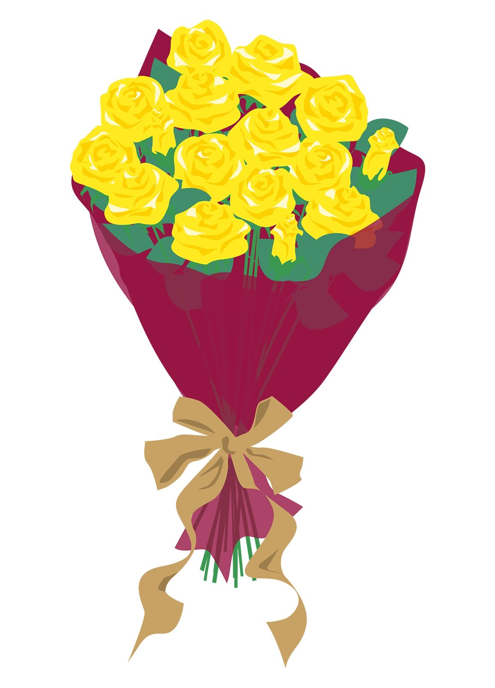

Que vendría a buscarla, con sus flores amarillas 🌻
No podía dejar pasar este día sin regalarte tus merecidas flores amarillas aunque este lejos de ti.
You are the moonlight of my life, Every night, Givin' all my love to you, My beatin' heart belongs to you, I walked for miles 'til I found you.
Te amo con todo mi corazón. ✨
